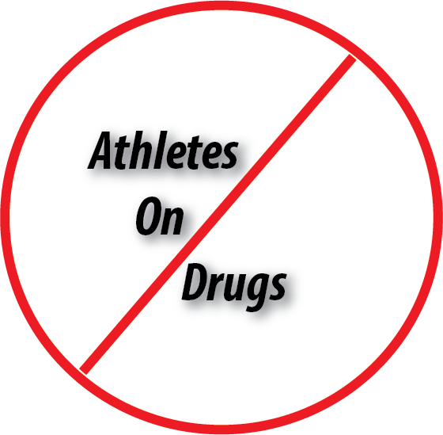

Drug abuse occurs in all sports and at most levels of competition. Drug abuse in the athlere population may involve doping in an effort to gain a competitive advantage. Athletes may turn to substances to cope with numerous stressors, including pressure to perform, injuries, physical pain, and retirement (which happens much earlier than retirement from ohter careers). May involve subtstances such as alchol or marijuana without the intent of performance enhancement, since athetes may develop substance disorders just as any non athlete may.
